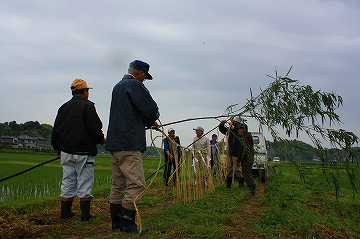

ナーバ流し/茨城県行方市
茨城にナーバ流しという摩訶不思議な行事がある、と聞いたのは性神に詳しい中原氏からだった。
氏によれば田植え後の5月、田んぼのあぜ道に藁でできた男女のシンボルが奉納されるのだという。
これまで人形道祖神や道切りといった様々な路傍の藁細工の奉納習俗を見てきた。道切りの一種として藁のチンコが奉納されているケースは見た事があるが、田んぼの真ん中に藁の男女が奉納される、というのはチョット聞いた事がないので、これは是非実見せねばなるまい、と駆けつけた次第。寝坊してチョット遅れちゃったんですけどね。
現着した時点ですでに藁の細工は終わっており、作った藁のチンマンを設置する段階になっていた。
集会所で作った藁細工を軽トラに積んで近くの田んぼに向かう。
周辺は全て田植えの終わった水田。とても眺めの良い場所だ。
早速、支柱となる竹をあぜ道の端に突き刺す。
この日は小雨が降ったりやんだりの天気で、なおかつ水の入った田んぼ沿いなので地盤が軟らかく大人一人でも竹がスルスルッと地面に刺さっていった。
手際よく柱を建てている地元の方々。息の合った作業を見ていると七人の侍、と称したくなってしまう。

さて、フォーマットが出来上がるといよいよ主役の登場である。
軽トラの荷台からチンマンが運び込まれる。
向かって左に男性器、右の藁つと納豆みたいなのが女性器である。
おもむろに結合。おお、いきなりですか！
しかしその直後にすぐ引き抜く。んん。何か問題でも？
どうやらサイズがうまく合わないらしくて微調整を施す。…意外と大変なんですね…
広大なスケールの田んぼのど真ん中でココが大きい、とかこっちが合わないとかミリ単位の議論をする七人の侍。
その表情はどこか楽しげだ。
で、微調整も完了し、改めて結合。今度は見事にパイルダーオン！やれやれ。
で、結合したチンマンを縫い付けて固定。
さらに補助の竹の角度や位置、チンマンの高さなどを微調整してようやく「コレでよかッペ」と相成る。
チンマン部が出来上がると今度は飾り物の設置。
麦藁を組んだ意味ありげな飾り物。
菱形は井戸の「井」、Ｙ字型のは酒樽を表しているという。
で、概ね完成のようである。
ディテールを見てみよう。まずは左手の男性型の方から。藁で編んだその珍型はよく見ると細かい細工がなされている。
下部に束ねられた縄の輪はタマを現しているようだ。また、根元の苗はご想像の通り陰毛を現しているのだ。
一方女性型の表現は更にユニークだ。そもそもネガティブな形状のモノを表現する事自体が造形上難しいテーマだと思うのだが、このナーバ流しの場合は藁つと納豆みたいな形状で表現している。
さらに上部には男性同様苗が取り付けられ、その下には編みこんだ縄が取り付けられている。
まあ、あまり詳しく述べるのも野暮なので詳細な説明はこの辺で。
ただ、先着して細工の工程を見ておられた知人の荒井さんによればおじいさんが苗代に付いた泥をず〜〜〜〜〜っと水洗いしていたそうです。
リアリズムの影にはこうした報われるんだか報われないんだかよくわからない努力があるんですね。
で、お神酒をかけて無事完成。ご苦労様でした。
七人の侍たちも完璧な仕上がりにさぞ御満悦であろう。
昔のナーバ流しの写真を見たが、現在のように男型と女型は固定されていなかった。
風に吹かれて付いたり離れたりしていたそうである。
設置が終わると七人の侍達はそそくさと先程細工をしていた集会所の方に戻っていってしまった。
田んぼのあぜ道に残されたのは藁細工と我々見物客（3人）ばかりなり。
設置した人達以外、誰に注目される事もなくこのまま数週間後には朽ちて自然消滅していってしまうのだろう。
この習俗で最も着目すべき点は擬似的な性交を屋外に表出させることの意味である。
例えば以前紹介した人形道祖神やオニンギョウサマやショウキサマ。これらはここのナーバ流しと同様に性器を藁細工で作って路傍に露出させる習俗である。しかしその役目はムラの境界に設置され、疫病や悪人のムラへの侵入を防ぐ守護神である。同じように村境の道の上に吊るされる道切りの男根も境界神だ。ちなみにここ行方市の近く石岡市にもオオニンギョウという人形道祖神が存在する。
（↑石岡のオオニンギョウ）
これらの境界神は同じ藁で作られた性器（を強調する）奉納でもその意味合いが違うのだ。
先の境界神系の藁チンマンは外敵の侵入を防ぐための威嚇の道具だが、ここのナーバ流しのチンマンはムラの内側でひっそりと行われている秘め事を毎年繰り返し繰り返しムラの人に対して公開することで五穀豊穣を祈願するのだろう。
従って性器を外に向けて露出するのではなく、互いが内側に向かいあう格好になっているではないか。
そういえば全国的に結合シーンを再現するのは大抵祭りにおいてのみですね。一大イベントですから判らんでもないですが…
このようなシーンを恒常的な奉納物として設置するケースがあってもよさそうなものだが…例えば擬似性交のモニュメントが発展してチンマン結合の石像があったりすると（私的には）盛り上がるのだが…そんなのないですかねえ？
青々とした田んぼに捧げられたおおらか過ぎる公開バーチャルセックス。
こうしてこの地方に夏がやってくるのだ。
注；この祭りには見物客が一切いませんので、もし見学される場合はくれぐれも進行の妨げにならぬよう御留意下さい。
今回の取材に際して荒井さんに強力フルサポートして頂きました。サンキュです。
2009.05.
珍寺大道場 HOME